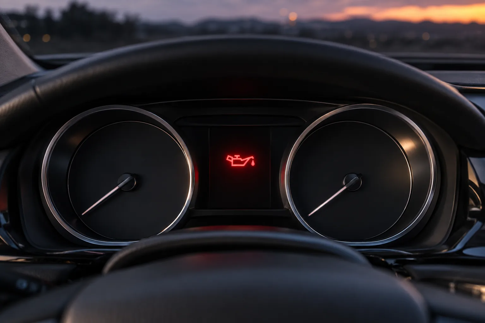
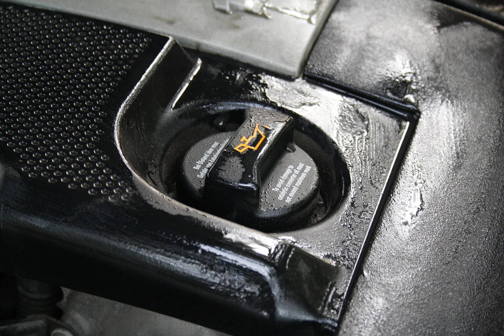
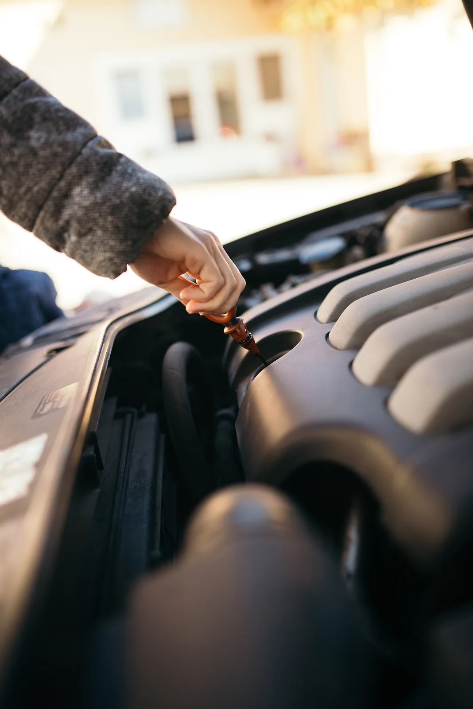
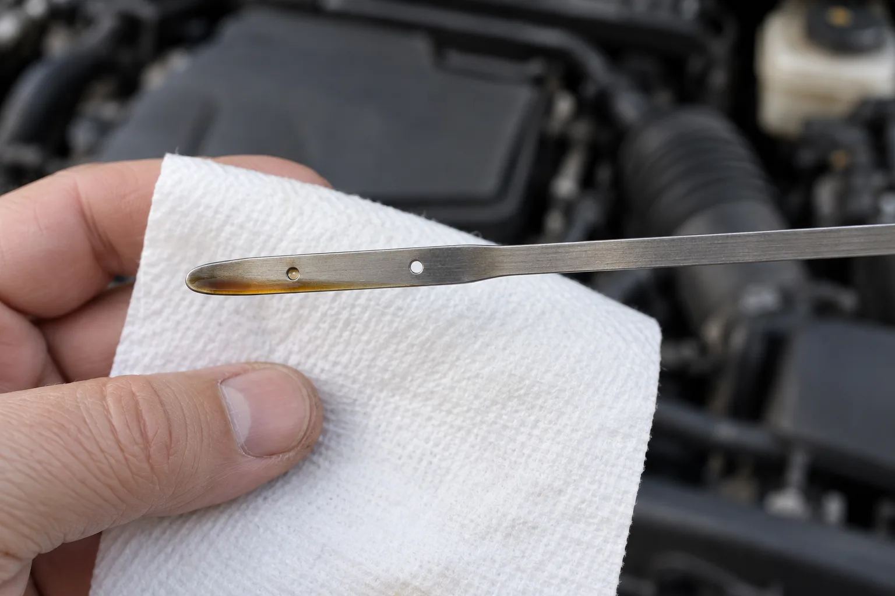
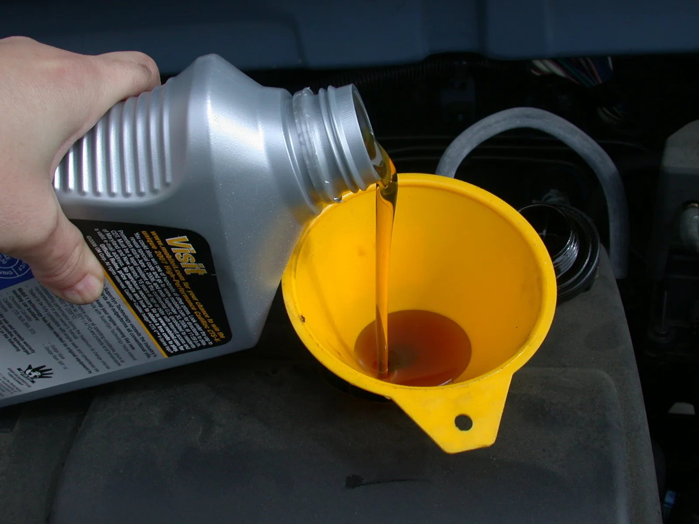
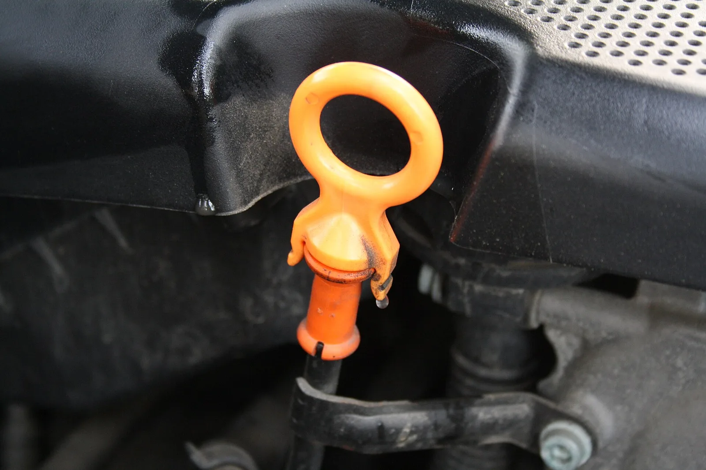
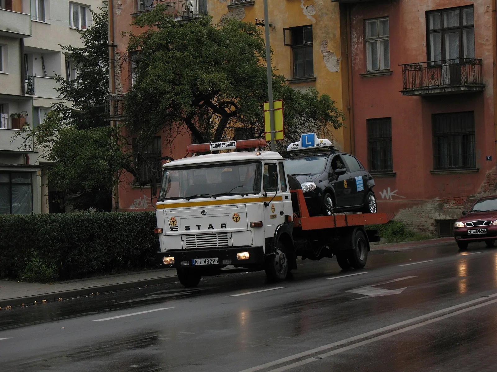

▲ 주행 중 계기판 가운데에 빨간 주전자 모양 엔진오일 압력 경고등이 켜진 모습 이미지=AI 생성
달리던 중 계기판에 빨간 주전자 모양 불이 들어왔다면, 다음 휴게소까지 버텨 볼 생각은 접는 게 좋다. 이 불은 엔진오일 압력이 떨어졌다는 경고다. 현대·기아·제네시스 취급설명서는 이 경고등이 켜진 채 계속 달리면 "엔진이 고장 날 수 있다"고 적고 있다. 경고등 색깔별 의미 전반은 CarPrism의 계기판 경고등 색깔 가이드에 정리해 두었으니, 여기서는 오일 경고등이 켜진 그 순간 무엇을 어떤 순서로 해야 하는지만 다룬다.
1. 먼저 구분하자 — 같은 '오일' 표시라도 급한 정도가 다르다
계기판에 뜨는 오일 관련 표시는 크게 세 가지다. 모양이 비슷해서 헷갈리기 쉽지만, 빨간색 주전자만큼은 성격이 완전히 다르다. 아래 표는 제조사 매뉴얼·공식 안내로 확인된 내용만 담았다.
| 표시 | 뜻 | 당장 멈춰야 하나? | 할 일 |
|---|---|---|---|
| 빨간 주전자 엔진오일 압력 경고등 | 현대·기아·제네시스: "엔진 오일이 부족하여 유압이 낮아지면 켜집니다" | 예. 안전한 곳에 세우고 시동을 끈다 | 오일량 점검 → 부족하면 보충 → 그래도 켜지면 직영 서비스센터·협력사 점검(현대·기아·제네시스). 폭스바겐은 "즉시 시동을 끄고 다시 걸지 말라"고 안내 |
| 오일 교환 알림 (서비스 알림 메시지) | 설정한 교환 주기가 다가왔다는 알림. 기아 K5 기준 남은 거리 1,500km 또는 30일 시점부터 시동 때마다 LCD에 표시 | 아니다 | 교환 일정을 잡고, 교환 뒤 서비스 알림 모드에서 초기화 |
| 노란(주황) 오일 표시 엔진오일 레벨 경고(폭스바겐 등 일부 차종) | 오일량이 낮다는 경고 | 안전해지는 대로 정차. 다만 빨간 경고처럼 '즉시 시동을 끄고 다시 걸지 말라'는 지시는 없다 | 계속 켜져 있으면 가능한 한 빨리 보충. 폭스바겐은 깜빡이면 오일 레벨 센서 고장 가능성을 안내 |
📍 노란 오일 레벨 경고는 모든 차에 있는 게 아니다
이번에 확인한 현대·기아·제네시스 취급설명서에는 노란색 오일 레벨 경고등이 별도 항목으로 나오지 않았다. 대신 빨간 압력 경고등을 "오일 부족으로 유압이 낮아질 때" 켜지는 불로 설명한다. 즉 국산차에서 주전자 불이 들어왔다면 오일 부족과 압력 저하를 한꺼번에 의심해야 한다. 내 차에 어떤 표시가 있는지는 취급설명서 '경고등 및 표시등' 항목에서 확인할 수 있다.

▲ 엔진오일 주입구 캡에 새겨진 주전자 모양 기호. 계기판의 오일 경고등과 같은 모양이다 ⓒ Frettie / Wikimedia Commons (CC BY 3.0)
2. 지금 바로 할 일 — 순서대로 따라 하기
순서는 '세우기 → 끄기 → 기다리기 → 확인하기'다. 혼다 영문 취급설명서는 유압이 낮은 상태로 엔진을 돌리면 "거의 즉시" 심각한 기계적 손상이 생길 수 있으니, 안전하게 세우는 대로 바로 시동을 끄라고 경고한다. 속도를 줄이는 동안에도 급가속은 피한다.
- 비상등을 켜고 안전한 곳에 세운다. 일반도로라면 길가 주차 공간이나 주유소, 고속도로라면 가까운 휴게소·졸음쉼터가 이상적이다. 거리가 멀다면 무리하지 말고 갓길에 세운다.
- 변속 레버를 P에 두고 시동을 끈다. 폭스바겐은 이 단계에서 "즉시 시동을 끄고 다시 걸지 말라"고 안내한다. 경고등이 꺼졌는지 보려고 여러 번 재시동하지 않는다.
- 고속도로 갓길이라면 먼저 사람부터 대피한다. 트렁크를 열거나 삼각대를 세워 뒤차에 알리고, 가드레일 밖으로 나간다. 오일 점검은 안전이 확보된 곳에서만 한다.
- 기다린다. 기아 K8·현대 스타리아 취급설명서는 시동을 끈 뒤 오일 팬의 유면이 안정될 때까지 약 15분 기다리라고 안내한다. 엔진과 배기 쪽이 뜨거우니 화상 방지를 위해서라도 바로 보닛 안에 손을 넣지 않는다. Kixx 블로그도 약 10분가량 식힌 뒤 확인하라고 권한다.
- 레벨 게이지(딥스틱)를 확인한다. 평지에서 게이지를 뽑아 깨끗한 헝겊으로 닦고, 끝까지 다시 꽂았다가 뽑는다. 오일 자국이 F선과 L선 사이면 양은 정상, L선 이하면 부족이다.
- 부족하면 F선까지 보충한다. 기아 취급설명서는 L선 이하일 경우 "F선까지 반드시 보충"하되 F선을 넘기지 말라고 적고 있다. 조금씩 넣고 다시 게이지로 확인하는 식이 안전하다.
▲ 갓길에 비상등을 켜고 선 차량 뒤에 삼각대를 세우고, 운전자는 가드레일 밖으로 피한 모습 이미지=AI 생성

▲ 엔진룸에서 오일 레벨 게이지를 뽑는 모습. 손잡이는 대개 노란색·주황색이라 찾기 쉽다 ⓒ Shixart1985 / Wikimedia Commons (CC BY 2.0)

▲ 레벨 게이지 끝에 오일이 아래쪽 표시 부근까지만 묻어 나온 모습. 표시 방식(구멍·눈금·F/L 글자)은 차종마다 다르다 이미지=AI 생성
📍 보충할 오일, 아무거나 넣어도 될까
보충용 오일은 취급설명서의 '추천 오일 및 용량' 항목에 적힌 사양을 따르는 게 원칙이다. 예를 들어 현대 투싼(2025) 가솔린 취급설명서는 'SAE 0W-20, API SN PLUS/SP 또는 ILSAC GF-6'을 추천 사양으로 적고, 점도 분류와 품질 등급을 동시에 만족하는 오일을 쓰라고 안내한다. 주유소나 마트에서 오일을 살 때는 통 라벨에서 점도(0W-20 등)와 품질 등급(API SP, ILSAC GF-6 등) 두 가지를 모두 맞춰 보자. 같은 설명서는 레벨 게이지를 보며 F선에 가깝게 넣되 F선 이상은 넣지 말라고 적고 있다. 현대차 취급설명서는 오일 첨가제를 넣지 말고, 주입구로 먼지가 들어가지 않게 주의하라고 안내한다. 규격 표기 읽는 법과 광유·합성유 차이는 합성유 표기 가이드를 참고하면 된다. 당장 맞는 오일이 없다면 억지로 구하려 하지 말고 긴급출동을 부르는 쪽이 낫다.

▲ 주입구에 깔때기를 대고 엔진오일을 붓는 모습. 조금씩 넣고 레벨 게이지로 다시 확인하면 넘치지 않는다 ⓒ Dvortygirl / Wikimedia Commons (CC BY-SA 3.0)
3. 보충했다면 — 경고등이 꺼지는지 확인하는 법
오일을 채운 뒤에는 경고등이 꺼지는지 짧게 확인한다. 폭스바겐은 오일을 보충한 경우 시동을 걸어 약 5초 두고 경고등을 지켜본 뒤 시동을 끄라고 안내한다. 5초 안에 꺼지면 주행을 이어가도 되고, 꺼지지 않으면 긴급출동을 부르라는 것이다.
현대·기아·제네시스 일부 차종은 한 가지를 더 알아둬야 한다. 싼타페(2026)·K5(2024)·GV70(2025) 취급설명서에 따르면 압력 경고등이 켜지면 엔진 출력을 제한하는 '강화된 엔진 보호 시스템'이 작동하고, 유압이 회복된 뒤 시동을 다시 걸어야 경고등이 꺼지고 출력 제한이 풀린다. 싼타페 설명서는 이 상태로 반복해서 계속 주행하면 엔진 경고등까지 켜진다고 적고 있다. 보충 후 재시동했는데도 차가 힘이 없거나 경고등이 남아 있다면, 매뉴얼의 결론은 같다. 직영 서비스센터나 협력 정비소 점검이다.
📍 하이브리드라면 — 엔진이 멈춰 있을 때는 이 불이 켜지지 않는다
유압은 엔진이 돌아야 생긴다. 혼다 하이브리드 모델 영문 취급설명서는 오토 아이들 스톱으로 엔진이 멈추면 유압이 떨어지지만 저유압 경고등은 켜지지 않는다고 설명한다. 모터로만 달리거나 정차 중 엔진이 꺼지는 건 정상 작동이라는 뜻이다. 반대로 주행 중 주전자 불이 켜졌다면 대처는 일반 차와 같다. 현대 쏘나타 하이브리드(2026) 취급설명서의 오일 점검 절차도 가솔린차와 똑같이 평지 주차 → 시동 끄고 약 15분 대기 → 레벨 게이지 F~L선 확인이다.
4. 잠깐 깜빡였다 꺼졌다면 — '괜찮다'는 신호가 아니다
급코너나 급제동 때 주전자 불이 잠깐 들어왔다 꺼지는 경우가 있다. 혼다 영문 취급설명서는 이 경고등이 깜빡이면 "유압이 순간적으로 매우 낮아졌다가 회복됐다"는 뜻이라고 설명한다. 그러면서 오일량과 유압이 직접 연결된 것은 아니지만 오일이 매우 부족한 엔진은 코너링 같은 주행 중에 압력을 잃을 수 있다고 적고 있다. Kixx 블로그도 급가속·급제동·급코너링으로 오일이 한쪽으로 쏠리면 일시적으로 유압이 떨어져 경고등이 잠깐 켜졌다 꺼질 수 있다고 설명한다.
그렇다고 '금방 꺼졌으니 문제없다'로 읽으면 안 된다. 혼다는 깜빡이든 계속 켜져 있든 "두 경우 모두 즉시 조치하라"고 안내한다. 설명서 내용대로라면 코너에서 불이 들어왔다는 건 오일이 이미 많이 줄었다는 신호일 수 있다. 가까운 안전한 곳에 세워 2번 순서대로 오일량부터 확인하자.
▲ 산길 급커브를 도는 승용차. 오일이 부족하면 이런 코너에서 오일이 한쪽으로 쏠려 경고등이 잠깐 켜질 수 있다 이미지=AI 생성
5. 오일이 충분한데도 켜진다면 — 가능한 원인
게이지상 오일량이 정상인데 경고등이 켜졌다면 오히려 더 조심해야 한다. 양 문제가 아니라 오일을 밀어 올리는 계통이나 감지 계통의 문제일 수 있고, 운전자가 길가에서 가려낼 방법은 없다. 폭스바겐도 오일량이 정상이면 보충 없이 곧바로 긴급출동을 부르라고 안내한다. 오일 제조사와 필터 제조사가 꼽는 원인은 다음과 같다.
| 원인 | 설명 | 근거 |
|---|---|---|
| 오일 펌프 이상 | 펌프 성능이 떨어져 압력을 충분히 만들지 못함. 펌프 안에 오일이 차지 않고 공기가 들어간 경우도 있음 | Kixx, Filtron |
| 엔진 베어링 마모 | 크랭크축·커넥팅 로드 베어링 등이 닳아 틈이 커지면서 오일 통로의 압력이 유지되지 않음 | Kixx, Filtron |
| 흡입 통로 막힘 | 오일 팬과 펌프를 잇는 통로가 막혀 오일이 올라오지 못함 | Filtron |
| 오일 필터 문제 | 규격에 맞지 않거나 품질이 낮은 필터를 달아 흐름 저항이 너무 큰 경우 | Filtron |
| 오일 열화·슬러지 | 거품을 막는 첨가제(소포제)가 소진돼 오일에 기포가 생기거나, 오래된 오일의 슬러지가 스트레이너 등 순환 계통에 쌓임 | Kixx |
| 센서·배선 이상 | 압력은 정상인데 압력 센서가 고장 났거나 센서와 경고등 사이 배선이 손상돼 잘못 켜짐 | Filtron |
마지막 줄처럼 센서 고장이라 엔진은 멀쩡한 경우도 있다. 문제는 센서 고장인지 진짜 압력 저하인지 겉으로는 구분이 안 된다는 점이다. 진단 장비와 압력 측정으로 가려내는 건 정비소의 몫이니, 결과가 나오기 전까지는 진짜 압력 저하로 간주하고 움직이지 않는 게 맞다. 오일이 눈에 띄게 줄어 있었다면 누유도 함께 봐야 한다. Kixx 블로그는 주차 자리 바닥의 갈색·검은색 얼룩, 엔진룸 부품의 젖은 흔적, 고무 타는 냄새나 연기를 확인하라고 권한다. 바닥 얼룩 색으로 어떤 액체인지 가리는 법은 누유 얼룩 색깔 진단 가이드에 있다.

▲ 엔진에 꽂힌 오일 레벨 게이지 손잡이. 게이지로 알 수 있는 건 오일 '양'까지다 ⓒ Frettie / Wikimedia Commons (CC BY 3.0)
6. 경고등을 켠 채 계속 달리면
엔진오일은 윤활만 하는 게 아니다. 현대차 취급설명서는 엔진오일이 "엔진의 윤활, 냉각 및 각종 유압 부품을 작동시키는 역할"을 한다고 설명한다. 압력이 떨어지면 이 세 가지가 한꺼번에 무너진다. 그래서 제조사 경고도 단호하다.
- 현대·기아·제네시스: 경고등이 켜진 상태로 계속 주행하면 엔진이 고장 날 수 있다. 일부 차종은 출력 제한이 걸리고, 반복되면 엔진 경고등도 켜진다.
- 혼다(영문 매뉴얼): 낮은 유압으로 엔진을 돌리면 거의 즉시 심각한 기계적 손상이 생길 수 있다. 재시동 뒤 10초 안에 경고등이 꺼지지 않으면 시동을 끄고 견인하라고 안내한다.
- 폭스바겐: 안전해지는 대로 즉시 세우고, 시동을 끈 뒤 다시 걸지 말 것.
경고등이 켜진 뒤 몇 km까지 괜찮은지 알려주는 제조사 자료는 없다. 오일 교환 주기를 넘겨 오일이 줄거나 열화된 게 원인이었다면, 수리 뒤에는 차종별 엔진오일 교환 주기도 다시 점검해 두자.
7. 이것만은 하지 말자
⚠️ 하면 안 되는 것
· "다음 휴게소까지만" 하고 계속 달리기 — 제조사 매뉴얼은 모두 즉시 정차를 요구한다. 몇 km는 괜찮다는 기준은 어디에도 없다
· 경고등이 꺼지는지 보려고 재시동을 반복하기 — 폭스바겐은 시동을 끈 뒤 다시 걸지 말라고 안내한다. 보충 후 확인할 때만 짧게 켠다
· 시동 끄자마자 딥스틱 확인하기 — 오일이 아직 팬으로 다 내려오지 않아 적게 보일 수 있고, 엔진룸이 뜨거워 화상 위험도 있다
· 오일량이 정상이니 센서 고장이겠거니 하고 주행하기 — 센서 고장과 실제 압력 저하는 길가에서 구분할 수 없다
· F선을 넘겨 가득 붓기 — 기아 매뉴얼은 F선 이상 보충하지 말라고 적고 있다
· 규격 모르는 오일이나 첨가제 넣기 — 현대차 매뉴얼은 오일 첨가제 사용을 금한다
· 고속도로 차로 쪽에서 보닛 열고 서 있기 — 점검보다 대피가 먼저다
8. 견인·긴급출동, 이럴 땐 부르자
| 상황 | 권장 조치 |
|---|---|
| 오일이 L선 이하였고, 보충 후 재시동하니 경고등이 바로 꺼짐 | 천천히 주행 가능. 다만 오일이 왜 줄었는지(누유·소모) 가까운 시일 안에 정비소 점검 |
| 보충했는데도 경고등이 꺼지지 않음 | 운행 중지 → 견인. 현대·기아·제네시스는 직영 서비스센터·협력사 점검 안내 |
| 오일량은 정상인데 경고등이 켜짐 | 운행 중지 → 견인. 펌프·필터·센서 진단 필요 |
| 경고등과 함께 금속성 소음, 연기, 타는 냄새 | 즉시 시동 끄고 대피 → 견인 |
| 맞는 오일이 없거나, 갓길이라 점검 자체가 위험함 | 보험사 긴급출동. 고속도로 본선·갓길에 멈췄다면 한국도로공사 1588-2504 |
자동차보험 긴급출동 특약에는 대개 견인 서비스가 포함되지만, 무료 견인 거리와 횟수는 보험사·특약마다 다르니 전화할 때 확인한다. 고속도로에서 멈췄다면 한국도로공사 1588-2504로 가까운 안전지대까지 무료 긴급견인을 요청할 수 있다. 이용 대상과 신고 요령은 주유 경고등 대처 가이드에 정리해 두었다.

▲ 적재형 견인차가 승용차를 싣고 이동하는 모습 ⓒ photobeppus / Wikimedia Commons (CC BY-SA 2.0)
9. 정리 — 빨간 주전자를 보면 세 가지만
첫째, 세우고 끈다. 빨간 주전자는 엔진오일 압력 경고다. 비상등을 켜고 안전한 곳에 세운 뒤 시동을 끄고, 고속도로라면 사람부터 가드레일 밖으로 피한다.
둘째, 기다렸다가 양을 본다. 평지에서 약 15분 기다린 뒤 레벨 게이지가 F~L선 사이인지 확인하고, L선 이하면 취급설명서 규격 오일을 F선까지만 채운다.
셋째, 그래도 켜지면 견인이다. 보충해도 안 꺼지거나 오일이 충분한데 켜졌다면 펌프·필터·센서 문제일 수 있다. 더 달리지 말고 긴급출동을 불러 정비소에서 진단받는다. 코너에서 잠깐 깜빡이고 꺼졌어도 오일 부족 신호일 수 있으니 세워서 확인한다. 노란 오일 레벨 표시는 안전해지는 대로 세워 보충, '오일 교환' 메시지는 교환 일정을 잡으면 된다.